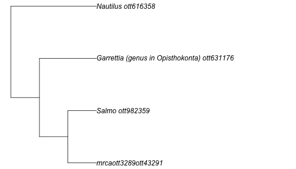
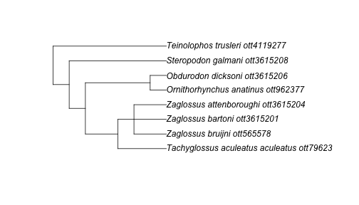
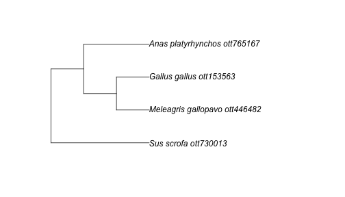

rotl provides an interface to the Open Tree of Life
(OTL) API and allows users to query the API, retrieve parts of the Tree
of Life and integrate these parts with other R packages.
The OTL API provides services to access:
- the Tree of Life a.k.a. TOL (the synthetic tree): a single draft tree that is a combination of the OTL taxonomy and the source trees (studies)
- the Taxonomic name resolution services a.k.a. TNRS:
the methods for resolving taxonomic names to the internal identifiers
used by the TOL and the GOL (the
ott ids). - the Taxonomy a.k.a. OTT (for Open Tree Taxonomy): which represents the synthesis of the different taxonomies used as a backbone of the TOL when no studies are available.
- the Studies containing the source trees used to build the TOL, and extracted from the scientific literature.
In rotl, each of these services correspond to functions
with different prefixes:
| Service |
rotl prefix |
|---|---|
| Tree of Life | tol_ |
| TNRS | tnrs_ |
| Taxonomy | taxonomy_ |
| Studies | studies_ |
rotl also provides a few other functions and methods
that can be used to extract relevant information from the objects
returned by these functions.
Demonstration of a basic workflow
The most common use for rotl is probably to start from a
list of species and get the relevant parts of the tree for these
species. This is a two step process:
- the species names need to be matched to their
ott_id(the Open Tree Taxonomy identifiers) using the Taxonomic name resolution services (TNRS) - these
ott_idwill then be used to retrieve the relevant parts of the Tree of Life.
Step 1: Matching taxonomy to the ott_id
Let’s start by doing a search on a diverse group of taxa: a tree frog (genus Hyla), a fish (genus Salmo), a sea urchin (genus Diadema), and a nautilus (genus Nautilus).
library(rotl)
taxa <- c("Hyla", "Salmo", "Diadema", "Nautilus")
resolved_names <- tnrs_match_names(taxa)It’s always a good idea to check that the resolved names match what you intended:
| search_string | unique_name | approximate_match | score | ott_id | is_synonym | flags | number_matches |
|---|---|---|---|---|---|---|---|
| hyla | Hyla | FALSE | 1 | 1062216 | FALSE | 1 | |
| salmo | Salmo | FALSE | 1 | 982359 | FALSE | 1 | |
| diadema | Diadema | FALSE | 1 | 4930522 | FALSE | 4 | |
| nautilus | Nautilus | FALSE | 1 | 616358 | FALSE | 1 |
The column unique_name sometimes indicates the higher
taxonomic level associated with the name. The column
number_matches indicates the number of ott_id
that corresponds to a given name. In this example, our search on
Diadema returns 2 matches, and the one returned by default is
indeed the sea urchin that we want for our query. The argument
context_name allows you to limit the taxonomic scope of
your search. Diadema is also the genus name of a fungus. To
ensure that our search is limited to animal names, we could do:
resolved_names <- tnrs_match_names(taxa, context_name = "Animals")If you are trying to build a tree with deeply divergent taxa that the
argument context_name cannot fix, see “How to change the
ott ids assigned to my taxa?” in the FAQ below.
Step 2: Getting the tree corresponding to our taxa
Now that we have the correct ott_id for our taxa, we can
ask for the tree using the tol_induced_subtree() function.
By default, the object returned by tol_induced_subtree is a
phylo object (from the ape package), so we
can plot it directly.
my_tree <- tol_induced_subtree(ott_ids = resolved_names$ott_id)## Warning in collapse_singles(tr, show_progress): Dropping singleton nodes with labels: Chordata ott125642, mrcaott42ott658, Craniata (subphylum in Deuterostomia) ott947318, Vertebrata (subphylum in Deuterostomia) ott801601, Gnathostomata (superclass in phylum
## Chordata) ott278114, Teleostomi ott114656, Sarcopterygii ott458402, Dipnotetrapodomorpha ott4940726, Tetrapoda ott229562, Amphibia ott544595, Batrachia ott471197, Anura ott991547, mrcaott114ott3129, mrcaott114ott37876, mrcaott114ott18818, Neobatrachia ott535804,
## mrcaott114ott309463, mrcaott114ott177, mrcaott177ott7464, mrcaott177ott2199, mrcaott177ott29310, mrcaott177ott1321, Hylidae ott535782, mrcaott177ott17126, mrcaott177ott43017, mrcaott177ott2732, mrcaott2732ott3289, mrcaott3289ott40328, mrcaott3289ott173489,
## mrcaott3289ott110534, mrcaott3289ott489758, mrcaott3289ott59160, Actinopterygii ott773483, Actinopteri ott285821, Neopterygii ott471203, Teleostei ott212201, Osteoglossocephalai ott5506109, Clupeocephala ott285819, Euteleosteomorpha ott5517919, mrcaott274ott392,
## mrcaott274ott595, Protacanthopterygii ott1024043, mrcaott274ott3887, mrcaott3887ott9371, Salmoniformes ott216171, Salmonidae ott739933, mrcaott3887ott28511, Salmoninae ott936925, mrcaott31485ott79094, Ambulacraria ott6520512, Echinodermata ott451020, Eleutherozoa
## ott317277, Echinozoa ott669475, Echinoidea ott669472, mrcaott360ott26831, mrcaott360ott3985, mrcaott360ott367, mrcaott360ott362, Acroechinoidea ott5677511, mrcaott362ott220009, mrcaott220009ott3651075, Diadematoida ott631174, Diadematidae ott631173,
## mrcaott220009ott357021, Protostomia ott189832, mrcaott49ott6612, Lophotrochozoa ott155737, mrcaott56ott519, mrcaott56ott5497, Mollusca ott802117, mrcaott56ott1881, mrcaott1881ott102410, Cephalopoda ott7368, Nautiloidea ott854446, Nautilida ott854452, Nautilidae
## ott616361
plot(my_tree, no.margin = TRUE)
FAQ
How to change the ott ids assigned to my taxa?
If you realize that tnrs_match_names assigns the
incorrect taxonomic group to your name (e.g., because of synonymy) and
changing the context_name does not help, you can use the
function inspect. This function takes the object resulting
from tnrs_match_names(), and either the row number, the
taxon name (you used in your search in lowercase), or the
ott_id returned by the initial query.
To illustrate this, let’s re-use the previous query but this time pretending that we are interested in the fungus Diadema and not the sea urchin:
taxa <- c("Hyla", "Salmo", "Diadema", "Nautilus")
resolved_names <- tnrs_match_names(taxa)
resolved_names## search_string unique_name approximate_match score ott_id is_synonym flags number_matches
## 1 hyla Hyla FALSE 1 1062216 FALSE 1
## 2 salmo Salmo FALSE 1 982359 FALSE 1
## 3 diadema Diadema FALSE 1 4930522 FALSE 4
## 4 nautilus Nautilus FALSE 1 616358 FALSE 1
inspect(resolved_names, taxon_name = "diadema")## search_string unique_name approximate_match score ott_id is_synonym flags number_matches
## 1 diadema Diadema FALSE 1 4930522 FALSE 4
## 2 diadema Diademoides FALSE 1 4024672 TRUE sibling_higher 4
## 3 diadema Garrettia (genus in Opisthokonta) FALSE 1 631176 TRUE 4
## 4 diadema Hypolimnas FALSE 1 643831 TRUE 4In our case, we want the second row in this data frame to replace the
information that initially matched for Diadema. We can now use
the update() function, to change to the correct taxa (the
fungus not the sea urchin):
resolved_names <- update(resolved_names,
taxon_name = "diadema",
new_row_number = 2
)
## we could also have used the ott_id to replace this taxon:
## resolved_names <- update(resolved_names, taxon_name = "diadema",
## new_ott_id = 4930522)And now our resolved_names data frame includes the taxon
we want:
| search_string | unique_name | approximate_match | score | ott_id | is_synonym | flags | number_matches |
|---|---|---|---|---|---|---|---|
| hyla | Hyla | FALSE | 1 | 1062216 | FALSE | 1 | |
| salmo | Salmo | FALSE | 1 | 982359 | FALSE | 1 | |
| diadema | Diademoides | FALSE | 1 | 4024672 | TRUE | sibling_higher | 4 |
| nautilus | Nautilus | FALSE | 1 | 616358 | FALSE | 1 |
How do I know that the taxa I’m asking for is the correct one?
The function taxonomy_taxon_info() takes
ott_ids as arguments and returns taxonomic information
about the taxa. This output can be passed to some helpers functions to
extract the relevant information. Let’s illustrate this with our
Diadema example
diadema_info <- taxonomy_taxon_info(631176)
tax_rank(diadema_info)## $`Garrettia (genus in Opisthokonta)`
## [1] "genus"
##
## attr(,"class")
## [1] "otl_rank" "list"
synonyms(diadema_info)## $`Garrettia (genus in Opisthokonta)`
## [1] "Centrechinus" "Diadema" "Diamema"
##
## attr(,"class")
## [1] "otl_synonyms" "list"
tax_name(diadema_info)## $`Garrettia (genus in Opisthokonta)`
## [1] "Garrettia"
##
## attr(,"class")
## [1] "otl_name" "list"In some cases, it might also be useful to investigate the taxonomic
tree descending from an ott_id to check that it’s the
correct taxon and to determine the species included in the Open Tree
Taxonomy:
diadema_tax_tree <- taxonomy_subtree(631176)
diadema_tax_tree## $tip_label
## [1] "Garrettia_parva_ott6356094" "Garrettia_rotella_ott6356095" "Diadema_savignyi_ott395692" "Diadema_palmeri_ott836860" "Diadema_setosum_ott631175" "Diadema_paucispinum_ott312263"
## [7] "unclassified_Diadema_ott7669081" "Diadema_africanum_ott4147369" "Diadema_antillarum_scensionis_ott220009" "Diadema_antillarum_antillarum_ott4147370" "Diadema_mexicanum_ott639130" "Diademasp.SP04-BIO_4_JGLCO_AYott7072105"
## [13] "Diademasp.SP03-BIO_3_JGLCO_AYott7072104" "Diademasp.SP02-BIO_2_JGLCO_AYott7072103" "Diadema_sp._DSM1_ott219999" "Diadema_sp._DSM6_ott771059" "Diademasp.ACOSTI-NIOTSU3ott7072098" "Diademasp.LI03-BIO_JGLCO_AYott7072102"
## [19] "Diademasp.LI02-BIO_JGLCO_AYott7072101" "Diademasp.LI01-BIO_JGLCO_AYott7072100" "Diademasp.ACOSTI-NIOTSU4ott7072099" "Diadema_sp._seto35_ott66618" "Diadema_sp._seto18_ott66623" "Diadema_sp._seto19_ott66624"
## [25] "Diadema_sp._seto38_ott66625" "Diadema_sp._DJN9_ott66626" "Diademasp.CS-2014ott5502179" "Diadema_sp._seto17_ott587478" "Diadema_sp._SETO15_ott587479" "Diadema_sp._dsm5_ott587480"
## [31] "Diadema_sp._DSM4_ott587481" "Diadema_sp._DSM3_ott587482" "Diadema_sp._DSM2_ott587483" "Diadema_sp._seto10_ott587484" "Diadema_sp._seto9_ott587485" "Diadema_sp._DSM8_ott587486"
## [37] "Diadema_sp._DSM7_ott587487" "Diadema_sp._seto16_ott312262" "Diadema_africana_ott5502180" "Diadema_principeana_ott5725746" "Diadema_vetus_ott5725747" "Diadema_regnyi_ott7669077"
## [43] "Diadema_amalthei_ott7669073" "Diadema_affine_ott7669072" "Diadema_subcomplanatum_ott7669079" "Diadema_ruppelii_ott7669078" "Diadema_calloviensis_ott7669074" "Diadema_megastoma_ott7669075"
## [49] "Diadema_priscum_ott7669076" "Garrettia_biangulata_ott7669080" "Diadema_ascensionis_ott4950423" "Diadema_lobatum_ott4950422"
##
## $edge_label
## [1] "Diadema_antillarum_ott1022356" "'Garrettia(genusinOpisthokonta" "ott631176'"By default, this function return all taxa (including self, and
internal) descending from this ott_id but it also possible
to return phylo object.
How do I get the tree for a particular taxonomic group?
If you are looking to get the tree for a particular taxonomic group,
you need to first identify it by its node id or ott id, and then use the
tol_subtree() function:
mono_id <- tnrs_match_names("Monotremata")
mono_tree <- tol_subtree(ott_id = ott_id(mono_id))## Warning in collapse_singles(tr, show_progress): Dropping singleton nodes with labels: Tachyglossus ott16047, Tachyglossus aculeatus ott16038, Ornithorhynchus ott962391, Obdurodon ott3615207, Steropodon ott3615209, Teinolophos ott4119276
plot(mono_tree)
How do I find trees from studies focused on my favourite taxa?
The function studies_find_trees() allows the user to
search for studies matching a specific criteria. The function
studies_properties() returns the list of properties that
can be used in the search.
furry_studies <- studies_find_studies(property = "ot:focalCladeOTTTaxonName", value = "Mammalia")
furry_ids <- furry_studies$study_idsNow that we know the study_id, we can ask for the meta
data information associated with this study:
furry_meta <- get_study_meta("pg_2550")
get_publication(furry_meta) ## The citation for the source of the study## [1] "O'Leary, Maureen A., Marc Allard, Michael J. Novacek, Jin Meng, and John Gatesy. 2004. \"Building the mammalian sector of the tree of life: Combining different data and a discussion of divergence times for placental mammals.\" In: Cracraft J., & Donoghue M., eds. Assembling the Tree of Life. pp. 490-516. Oxford, United Kingdom, Oxford University Press."
## attr(,"DOI")
## [1] ""
get_tree_ids(furry_meta) ## This study has 10 trees associated with it## [1] "tree5513" "tree5515" "tree5516" "tree5517" "tree5518" "tree5519" "tree5520" "tree5521" "tree5522" "tree5523"
candidate_for_synth(furry_meta) ## None of these trees are yet included in the OTL## NULLUsing get_study("pg_2550") would returns a
multiPhylo object (default) with all the trees associated
with this particular study, while
get_study_tree("pg_2550", "tree5513") would return one of
these trees.
The tree returned by the API has duplicated tip labels, how can I work around it?
You may encounter the following error message:
Error in rncl(file = file, ...) : Taxon number 39 (coded by the token Pratia
angulata) has already been encountered in this tree. Duplication of taxa in a
tree is prohibited.This message occurs as duplicate labels are not allowed in the NEXUS
format and it is stricly enforced by the part of the code used by
rotl to import the trees in memory.
If you use a version of rotl more recent than 0.4.1,
this should not happen by default for the function
get_study_tree. If it happens with another function, please
let us know.
The easiest way to work around this is to save the tree in a file, and use APE to read it in memory:
get_study_tree(
study_id = "pg_710", tree_id = "tree1277",
tip_label = "ott_taxon_name", file = "/tmp/tree.tre",
file_format = "newick"
)
tr <- ape::read.tree(file = "/tmp/tree.tre")How do I get the higher taxonomy for a given taxa?
If you encounter a taxon name you are not familiar with, it might be useful to obtain its higher taxonomy to see where it fits in the tree of life. We can combine several taxonomy methods to extract this information easily.
giant_squid <- tnrs_match_names("Architeuthis")
tax_lineage(taxonomy_taxon_info(ott_id(giant_squid), include_lineage = TRUE))## $`564394`
## rank name unique_name ott_id
## 1 family Architeuthidae Architeuthidae 564393
## 2 order Oegopsida Oegopsida 43352
## 3 superorder Decapodiformes Decapodiformes 854107
## 4 infraclass Neocoleoidea Neocoleoidea 329546
## 5 subclass Coleoidea Coleoidea 7371
## 6 class Cephalopoda Cephalopoda 7368
## 7 phylum Mollusca Mollusca 802117
## 8 no rank Lophotrochozoa Lophotrochozoa 155737
## 9 no rank Protostomia Protostomia 189832
## 10 no rank Bilateria Bilateria 117569
## 11 no rank Eumetazoa Eumetazoa 641038
## 12 kingdom Metazoa Metazoa 691846
## 13 no rank Holozoa Holozoa 5246131
## 14 no rank Opisthokonta Opisthokonta 332573
## 15 domain Eukaryota Eukaryota 304358
## 16 no rank cellular organisms cellular organisms 93302
## 17 no rank life life 805080Why are OTT IDs discovered with rotl missing from an
induced subtree?
Some taxonomic names that can be retrieved through the taxonomic name resolution service are not part of the Open Tree’s synthesis tree. These are usually traditional higher-level taxa that have been found to be paraphyletic.
For instance, if you wanted to fetch a tree relating the three birds that go into a Turkducken as well as the pork used for stuffing, you might search for the turkey, duck, chicken, and pork genera:
turducken <- c("Meleagris", "Anas", "Gallus", "Sus")
taxa <- tnrs_match_names(turducken, context_name = "Animals")
taxa## search_string unique_name approximate_match score ott_id is_synonym flags number_matches
## 1 meleagris Meleagris FALSE 1 446481 FALSE 2
## 2 anas Anas FALSE 1 765185 FALSE 1
## 3 gallus Gallus FALSE 1 153562 FALSE 3
## 4 sus Sus FALSE 1 730021 FALSE 1We have the OTT ids for each genus, however, if we tried to get the induced subtree from these results, we would get an error:
tr <- tol_induced_subtree(ott_id(taxa))## Warning in collapse_singles(tr, show_progress): Dropping singleton nodes with labels: Mammalia ott244265, Theria (subclass in Deuterostomia) ott229558, Eutheria (in Deuterostomia) ott683263, mrcaott42ott3607383, mrcaott42ott3607429, mrcaott42ott3607455,
## mrcaott42ott72667, Boreoeutheria ott5334778, Laurasiatheria ott392223, mrcaott1548ott4697, mrcaott1548ott6790, mrcaott1548ott3607484, mrcaott1548ott4942380, mrcaott1548ott4942547, mrcaott1548ott3021, Artiodactyla ott622916, mrcaott1548ott21987, Suina ott916745,
## Suidae ott730008, Sauropsida ott639642, Sauria ott329823, mrcaott246ott2982, mrcaott246ott31216, mrcaott246ott3602822, mrcaott246ott4143599, mrcaott246ott3600976, mrcaott246ott4132107, Aves ott81461, Neognathae ott241846, mrcaott4765ott4131031, Galliformes
## ott837585, mrcaott4765ott6520194, mrcaott4765ott109888, mrcaott4765ott75785, mrcaott4765ott104461, mrcaott4765ott151684, mrcaott4765ott54193, mrcaott4765ott3596087, mrcaott4765ott415487, mrcaott4765ott51354, mrcaott4765ott781249, mrcaott4765ott53700,
## mrcaott4765ott572162, mrcaott4765ott446490, Meleagridinae ott781250, mrcaott49310ott51349, mrcaott49310ott49319, mrcaott49310ott153554, mrcaott153554ott867027, mrcaott30843ott4947869, Anseriformes ott241841, mrcaott30843ott714464, Anatidae ott765193,
## mrcaott30843ott88380, mrcaott30843ott1082830, mrcaott30843ott75874, mrcaott30843ott432041, mrcaott30843ott30847, mrcaott30843ott166683, mrcaott30843ott30845, mrcaott30845ott30850As the error message suggests, some of the taxa are not found in the synthetic tree. This occurs for 2 main reasons: either the taxa is invalid, or it is part of a group that is not monophyletic in the synthetic tree. There are two ways to get around this issue: (1) removing the taxa that are not part of the Open Tree; (2) using the complete species name.
Removing the taxa missing from the synthetic tree
To help with this situation, rotl provides a way to
identify the OTT ids that are not part of the synthetic tree. The
function is_in_tree() takes the output of the
ott_id() function and returns a vector of logical
indicating whether the taxa are part of the synthetic tree. We can then
use to only keep the taxa that appear in the synthetic tree:
in_tree <- is_in_tree(ott_id(taxa))
in_tree## Meleagris Anas Gallus Sus
## TRUE FALSE TRUE TRUE
tr <- tol_induced_subtree(ott_id(taxa)[in_tree])## Warning in collapse_singles(tr, show_progress): Dropping singleton nodes with labels: Mammalia ott244265, Theria (subclass in Deuterostomia) ott229558, Eutheria (in Deuterostomia) ott683263, mrcaott42ott3607383, mrcaott42ott3607429, mrcaott42ott3607455,
## mrcaott42ott72667, Boreoeutheria ott5334778, Laurasiatheria ott392223, mrcaott1548ott4697, mrcaott1548ott6790, mrcaott1548ott3607484, mrcaott1548ott4942380, mrcaott1548ott4942547, mrcaott1548ott3021, Artiodactyla ott622916, mrcaott1548ott21987, Suina ott916745,
## Suidae ott730008, Sauropsida ott639642, Sauria ott329823, mrcaott246ott2982, mrcaott246ott31216, mrcaott246ott3602822, mrcaott246ott4143599, mrcaott246ott3600976, mrcaott246ott4132107, Aves ott81461, Neognathae ott241846, Galloanserae ott5839486,
## mrcaott4765ott4131031, Galliformes ott837585, mrcaott4765ott6520194, mrcaott4765ott109888, mrcaott4765ott75785, mrcaott4765ott104461, mrcaott4765ott151684, mrcaott4765ott54193, mrcaott4765ott3596087, mrcaott4765ott415487, mrcaott4765ott51354,
## mrcaott4765ott781249, mrcaott4765ott53700, mrcaott4765ott572162, mrcaott4765ott446490, Meleagridinae ott781250, mrcaott49310ott51349, mrcaott49310ott49319, mrcaott49310ott153554, mrcaott153554ott867027Using the full taxonomic names
The best way to avoid these problems is to specify complete species names (species being the lowest level of classification in the Open Tree taxonomy they are guaranteed to be monophyletic):
turducken_spp <- c("Meleagris gallopavo", "Anas platyrhynchos", "Gallus gallus", "Sus scrofa")
taxa <- tnrs_match_names(turducken_spp, context_name = "Animals")
tr <- tol_induced_subtree(ott_id(taxa))## Warning in collapse_singles(tr, show_progress): Dropping singleton nodes with labels: Mammalia ott244265, Theria (subclass in Deuterostomia) ott229558, Eutheria (in Deuterostomia) ott683263, mrcaott42ott3607383, mrcaott42ott3607429, mrcaott42ott3607455,
## mrcaott42ott72667, Boreoeutheria ott5334778, Laurasiatheria ott392223, mrcaott1548ott4697, mrcaott1548ott6790, mrcaott1548ott3607484, mrcaott1548ott4942380, mrcaott1548ott4942547, mrcaott1548ott3021, Artiodactyla ott622916, mrcaott1548ott21987, Suina ott916745,
## Suidae ott730008, Sus ott730021, Sauropsida ott639642, Sauria ott329823, mrcaott246ott2982, mrcaott246ott31216, mrcaott246ott3602822, mrcaott246ott4143599, mrcaott246ott3600976, mrcaott246ott4132107, Aves ott81461, Neognathae ott241846, mrcaott4765ott4131031,
## Galliformes ott837585, mrcaott4765ott6520194, mrcaott4765ott109888, mrcaott4765ott75785, mrcaott4765ott104461, mrcaott4765ott151684, mrcaott4765ott54193, mrcaott4765ott3596087, mrcaott4765ott415487, mrcaott4765ott51354, mrcaott4765ott781249, mrcaott4765ott53700,
## mrcaott4765ott572162, mrcaott4765ott446490, Meleagridinae ott781250, Meleagris ott446481, mrcaott49310ott51349, mrcaott49310ott49319, mrcaott49310ott153554, mrcaott153554ott867027, Gallus ott153562, mrcaott153554ott240568, mrcaott30843ott4947869, Anseriformes
## ott241841, mrcaott30843ott714464, Anatidae ott765193, mrcaott30843ott88380, mrcaott30843ott1082830, mrcaott30843ott75874, mrcaott30843ott432041, mrcaott30843ott30847, mrcaott30843ott166683, mrcaott30843ott30845, mrcaott30845ott30850, mrcaott30850ott82415,
## mrcaott30850ott82420, mrcaott30850ott656780, mrcaott30850ott82414, mrcaott30850ott82425, mrcaott30850ott765188, mrcaott30850ott332079, mrcaott30850ott30858, mrcaott30850ott90669, mrcaott30850ott30855, mrcaott30850ott604172, mrcaott30850ott339494,
## mrcaott30850ott82410, mrcaott30850ott604175, mrcaott30850ott190881, mrcaott190881ott604182
plot(tr)